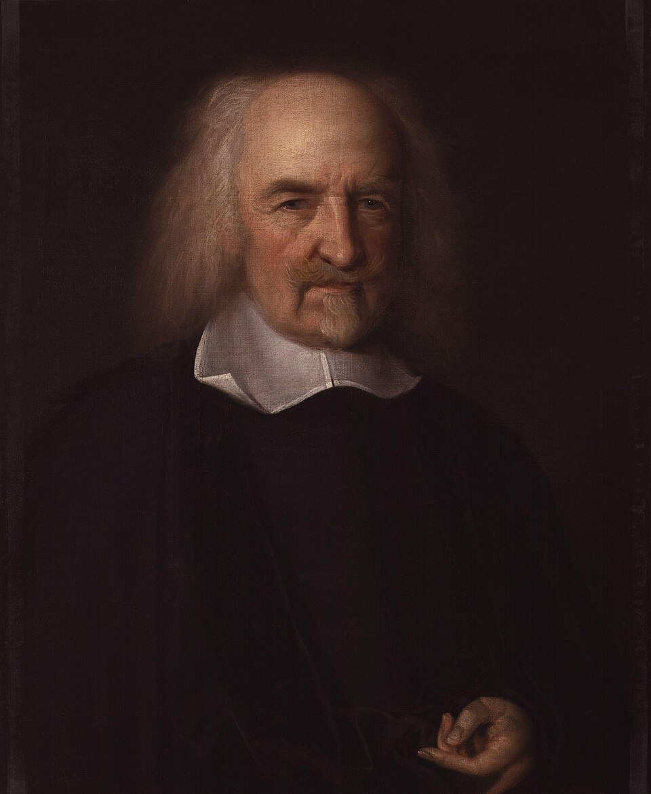
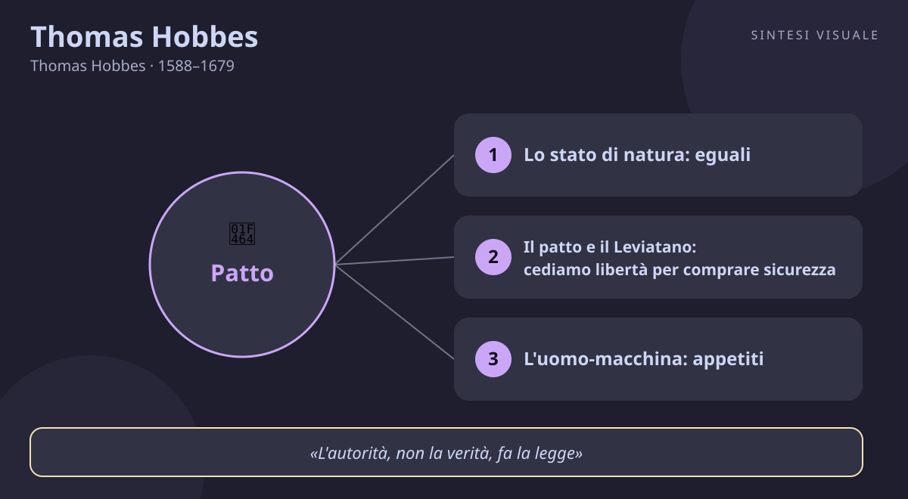

Home / Filosofi / Thomas Hobbes

Thomas Hobbes
Thomas Hobbes · 1588–1679
«Senza Stato, la vita è solitaria, brutale e breve»
- Stato di natura
- Leviatano
- Sovranità
- Paura
💬La massima
«La vita dell'uomo [nello stato di natura è] solitaria, povera, spregevole, brutale e breve.»
— Thomas Hobbes, Leviatano, 1651 (in inglese: «the life of man, solitary, poor, nasty, brutish, and short», cap. XIII)
Hobbes non sta facendo poesia nera: sta descrivendo un esperimento mentale. Togliete ogni potere comune — niente polizia, niente giudici, niente leggi che funzionino davvero — e cosa resta? Uomini all'incirca eguali nelle capacità (anche il più debole può uccidere il più forte, con l'astuzia o alleandosi con altri), mossi dallo stesso desiderio di conservare se stessi e di primeggiare. Se due persone vogliono la stessa cosa che non si può dividere, diventano nemiche. E poiché nessuno può mai sentirsi al sicuro — il vicino di oggi può essere l'assalitore di domani — la strategia più razionale diventa prevenire: attaccare per primi, accumulare potere, non fidarsi mai. È la «guerra di tutti contro tutti», che non significa una battaglia continua, ma un'insicurezza continua: come quando due paesi sono in guerra fredda, anche senza spari non si dorme sonni tranquilli.
In tale condizione, spiega Hobbes, sparisce tutto ciò che amiamo: niente industria perché il frutto del lavoro è incerto (perché seminare, se altri raccoglieranno?), niente commerci, niente costruzioni solide, niente scienza, niente lettere, niente società — e soprattutto «paura continua e pericolo di morte violenta». La massima è dunque un avvertimento: la civiltà non è lo stato naturale delle cose, è un artificio fragile che regge solo se esiste un potere capace di far rispettare i patti. E c'è un rovescio che ci riguarda da vicino: ogni volta che le regole saltano — in una classe senza insegnante, in un condominio senza amministratore, in una rete senza moderazione — ritroviamo in piccolo quello stato di natura, con la sua logica di sospetto e prevaricazione.
👤Biografia
Thomas Hobbes nasce il 5 aprile 1588 a Westport, presso Malmesbury: la madre lo partorisce prima del tempo, spaventata dalla notizia che l'Invincibile Armata spagnola si avvicina alle coste. Il padre, un pastore di campagna rissoso, abbandona presto la famiglia; a crescerlo e a pagargli gli studi è uno zio agiato. Studia a Oxford, al Magdalen Hall, dove impara la scolastica e la disprezza: un sapere di parole, dice, che non spiega nulla del mondo reale.
La sua fortuna è diventare precettore della famiglia Cavendish, conti e poi duchi di Devonshire: un impiego che gli dà stipendio, biblioteca e, soprattutto, viaggi in Europa. A trent'anni scopre quasi per caso gli Elementi di Euclide e ne resta folgorato: ecco come si ragiona, da definizioni chiare a conclusioni necessarie. Conosce Bacone (di cui è segretario per un periodo), incontra Galileo a Pisa, discute con Cartesio a Parigi, studia il corpo umano come una macchina. Quando nel 1640 il Parlamento lungo accusa di tradimento chi difende il re, Hobbes — che ha già scritto contro la ribellione — fugge a Parigi e vi resta undici anni: lì, in esilio, scrive il Leviatano (1651).
Torna a Londra dopo la pubblicazione, si sottomette al nuovo regime di Cromwell e, con la Restaurazione del 1660, ottiene la protezione di Carlo II, suo antico allievo di matematica. Litiga con tutti: con i vescovi, che lo accusano di ateismo; con i matematici della Royal Society, che ridono dei suoi tentativi di quadrare il cerchio; con i repubblicani e con i monarchici. Scrive fino all'ultimo: a ottant'anni traduce Tucidide, a novanta Omero. Muore il 4 dicembre 1679 a Hardwick Hall, a novantun anni, lucidissimo: l'uomo nato nella paura dell'Armada aveva passato la vita a spiegare da dove nasce la paura — e come tenerla a bada.
📌Sintesi del pensiero
Per Hobbes gli uomini sono corpi in movimento, spinti dal desiderio di autoconservazione e di potere, eguali nella vulnerabilità e destinati a scontrarsi se manca un potere comune. Per uscire dalla guerra di tutti contro tutti stipulano un patto: cedono il diritto di governarsi da sé a un sovrano assoluto, il Leviatano, che garantisce pace e sicurezza in cambio di obbedienza. Leggi, proprietà e religione valgono solo perché il sovrano le stabilisce e le fa rispettare.
🏛️I temi fondamentali
- Lo stato di natura: eguali, desideranti, insicuri. Hobbes parte da tre fatti: gli uomini si equivalgono nelle capacità di nuocersi, desiderano le stesse cose scarse e nessuno può dirsi al sicuro mentre gli altri sono liberi di aggredirlo. Da qui nascono diffidenza, competizione e desiderio di gloria: tre cause di lite. Esempio concreto: in un gruppo di lavoro senza ruoli chiari, due colleghi bravi puntano alla stessa promozione e iniziano a trattenere informazioni e a parlarsi dietro le spalle — nessuno ha ancora «fatto» nulla di grave, ma la fiducia è già guerra fredda, proprio come nello stato di natura.
- Il patto e il Leviatano: cediamo libertà per comprare sicurezza. L'unica via d'uscita è un accordo reciproco: ciascuno rinuncia al diritto su tutto e lo consegna a un uomo o a un'assemblea, il sovrano, che userà la forza per far rispettare i patti. Il famoso frontespizio del Leviatano mostra un gigante coronato il cui corpo è fatto di tanti piccoli uomini: lo Stato è una persona artificiale, più grande di chi la compone, creata per proteggerli. Esempio concreto: i condomini che litigano per il rumore e i parcheggi finché non votano un regolamento con multe e un amministratore che lo applica — brontolano per le regole, ma senza quel «piccolo Leviatano» tornerebbero i dispetti e le ripicche.
- L'uomo-macchina: appetiti, avversioni e calcolo. Per Hobbes anche la mente funziona come un meccanismo: sensazioni, immaginazione e ragionamento sono movimenti interni, e il ragionare stesso è «calcolare», sommare e sottrarre conseguenze. Il bene non è scritto nel cielo: è ciò che ciascuno desidera, il male ciò da cui fugge. Esempio concreto: un artigiano che deve fissare un prezzo non segue un «giusto prezzo» astratto ma calcola come Hobbes — costi, fatica, concorrenza, quanto il cliente desidera il lavoro — e sceglie l'offerta che massimizza il vantaggio con il minimo rischio.
- Legge e religione sotto il sovrano: comanda l'autorità, non la verità. Celebre la formula: auctoritas, non veritas, facit legem — a fare la legge è l'autorità, non la verità. Una dottrina diventa legge solo se il sovrano la ordina; e le dispute religiose, che avevano insanguinato l'Inghilterra, devono tacere davanti al potere civile, unico interprete pubblico della Scrittura. Esempio concreto: in azienda due uffici litigano citando ciascuno «i dati veri» e «la procedura giusta», finché il responsabile decide una linea unica e la fa rispettare — i dati restano discutibili, ma senza una decisione autorevole il lavoro resta fermo in eterno.
📚Le opere principali
- Leviatano (1651). Il capolavoro, scritto a Parigi durante l'esilio: quattro parti su uomo, Stato, Chiesa e Regno delle tenebre. Tesi centrale: solo un sovrano assoluto nato dal patto può salvare gli uomini dalla guerra di tutti contro tutti. Conta perché fonda la filosofia politica moderna: Stato come artificio, potere come autorizzazione, religione sottomessa alla pace civile.
- De Cive (1642, ampliato 1647). Il «cittadino» della trilogia degli Elementi di filosofia: qui compare la formula homo homini lupus, l'uomo è un lupo per l'uomo nello stato di natura. Tesi centrale: la società nasce non dall'amicizia ma dal timore reciproco e dal patto. Conta perché anticipa in forma compatta tutto il Leviatano e fissa l'antropologia pessimistica di Hobbes.
- Elementi di legge naturale e politica (1640, pubblicati 1650). Scritti per i circoli di Newcastle alla vigilia della guerra civile, circolano manoscritti e dividono la materia in natura umana e corpo politico. Tesi centrale: passioni e contratti spiegano sia l'uomo che lo Stato con lo stesso metodo geometrico. Contano perché mostrano il laboratorio di Hobbes: il Leviatano nasce da queste pagine.
- De Corpore (1655) e De Homine (1658). Le altre due parti della trilogia filosofica: il corpo in generale e l'uomo in particolare, ottica, linguaggio, passioni. Tesi centrale: tutto — natura, uomo, società — si spiega con materia in movimento e calcolo delle conseguenze. Contano perché rivelano Hobbes scienziato e materialista, l'ammiratore di Galileo che voleva fare della filosofia una geometria del reale.
💬Massime celebri
«La vita dell'uomo [nello stato di natura è] solitaria, povera, spregevole, brutale e breve» — Leviatano (1651), cap. XIII. Conta perché è la diagnosi più famosa della fragilità civile: senza un potere che garantisca i patti, la civiltà evapora.
«L'uomo è un lupo per l'uomo» (in latino: homo homini lupus) — De Cive (1642), lettera dedicatoria. Conta perché riassume in cinque parole l'antropologia di Hobbes: il pericolo non viene dai mostri, ma dai nostri simili senza regole.
«L'autorità, non la verità, fa la legge» (in latino: auctoritas, non veritas, facit legem) — Leviatano (1651), cap. XXVI. Conta perché separa il comando dalla dottrina: una norma obbliga perché l'ha posta chi può farla rispettare, non perché è «vera».
⌛Contesto storico
Hobbes nasce nel 1588, l'anno dell'Invincibile Armata: l'Inghilterra di Elisabetta I respinge la Spagna e si avvia a diventare potenza dei mari, mentre Shakespeare riempie i teatri e le campagne tremano tra carestie e paure di invasione. Cresce sotto Giacomo I, tra complotti cattolici come la Congiura delle polveri del 1605 e scontri tra Corona e Parlamento su tasse e religione. Da giovane precettore attraversa un'Europa in fiamme: dal 1618 la guerra dei Trent'anni devasta la Germania per motivi religiosi e di potenza, e nel 1633 Galileo viene condannato a Roma — Hobbes lo visiterà ad Arcetri e ne trarrà la lezione del metodo meccanico.
Il cuore della sua vita adulta è la guerra civile inglese: dal 1642 esercito del re e Parlamento si massacrano, nel 1649 Carlo I viene decapitato e al suo posto governa Cromwell con una repubblica puritana severa. A Parigi, dove Hobbes è esule, infuria intanto la Fronda contro il giovane Luigi XIV, mentre Cartesio muore in Svezia nel 1650 dopo aver diviso l'Europa dotta. Nel 1651, anno del Leviatano, l'Inghilterra è una repubblica insanguinata e divisa in sette: il libro di Hobbes — che chiede obbedienza al potere effettivo, qualunque esso sia, purché garantisca la pace — scontenta tutti, monarchici e parlamentari, cattolici e protestanti.
Dopo la Restaurazione del 1660, con Carlo II sul trono, Londra rinasce: nel 1660 nasce la Royal Society, nel 1665 la peste uccide centomila persone, nel 1666 il grande incendio rade al suolo la città. Intanto Newton cresce a Cambridge e Locke, di quarant'anni più giovane, sta preparando il rovesciamento liberale delle tesi di Hobbes. I movimenti che lo formano sono la nuova scienza di Galileo e Bacone, la geometria di Euclide, il nominalismo tardo-scolastico e la politica della ragion di Stato di Machiavelli e Bodin. I movimenti che lui trasmette sono il giusnaturalismo moderno, il contrattualismo (Locke, Rousseau e Kant discuteranno sempre con lui, anche per contraddirlo), il positivismo giuridico e, molto più tardi, il realismo nelle relazioni internazionali e la teoria dei giochi.
🌊L'eredità
Senza Hobbes la politica moderna parlerebbe un'altra lingua. Il primo a raccoglierne la sfida è Locke, che accetta l'idea del patto ma la rovescia: il governo non è un padrone assoluto, è un mandatario che si può licenziare — e da lì nascono liberalismo e rivoluzioni. Rousseau riprende il contratto ma lo fa democratico: il sovrano diventa il popolo stesso. Poi la strada si biforca: da un lato il positivismo giuridico di Bentham e Austin impara da Hobbes che il diritto è comando del sovrano, non specchio della natura; dall'altro Kant, Hegel e Marx discutono con la sua antropologia per superarla.
Nel Novecento Hobbes ritorna ovunque, spesso sotto mentite spoglie. Carl Schmitt ne fa il teorico della decisione sovrana e del nemico; i realisti delle relazioni internazionali vedono negli Stati armati di oggi gli stessi «gladiatori» dello stato di natura; gli economisti della teoria dei giochi ritrovano il suo dilemma nel «dilemma del prigioniero» — perché cooperare, se tradire conviene? — e Rawls e Nozick ripartono entrambi dal suo stato di natura per rifondare la giustizia. Ancora oggi, ogni volta che discutiamo di sicurezza contro libertà, di poteri di emergenza, di moderazione delle piattaforme o di eserciti e confini, stiamo continuando la conversazione aperta dal vecchio di Malmesbury: quanta libertà siamo disposti a cedere, e a chi, pur di non avere paura?
🌍Esempi di oggi
- La chat di condominio senza regole. All'inizio ognuno scrive quando vuole, con maiuscole e polemiche sui bidoni e sul rumore: in poche settimane nessuno osa più proporre nulla e partono dispetti in assemblea. Poi si vota un regolamento — orari, multe, un amministratore che decide — e miracolosamente torna la pace: è il patto di Hobbes in miniatura, libertà ceduta in cambio di sicurezza.
- Il venditore che abbassa i prezzi per paura del concorrente. Un negoziante vede l'insegna nuova dall'altra parte della strada e, senza prove, taglia i margini e sparge voci sul rivale per «prevenirlo». Il rivale risponde allo stesso modo e in un mese ci rimettono entrambi: la logica dell'attacco preventivo nello stato di natura, dove la diffidenza razionale produce rovina collettiva finché una «autorità» — un patto di categoria, regole chiare — non ferma la corsa.
- La classe con il supplente che non decide. Finché l'insegnante detta regole e le fa rispettare, anche i più turbolenti studiano; quando il supplente lascia correre «per farsi voler bene», i prepotenti prendono il banco, i timidi tacciono e la lezione muore. È il Leviatano rovesciato: senza un potere che garantisca i patti, la vita della classe diventa — in piccolo — solitaria per i buoni, brutale per i deboli e breve per l'apprendimento.
📄
# Thomas Hobbes — «La vita senza Stato è solitaria, povera, brutale e breve»
Buongiorno! Oggi incontriamo il pensatore che guardò in faccia la paura e ne fece una scienza della politica: precettore di nobili, esule a Parigi, amico di Galileo e nemico giurato di preti e scolastici, l'uomo che a novantun anni tradusse ancora Tucidide e Omero. Il ritratto qui sopra — Hobbes anziano nel celebre dipinto di John Michael Wright del 1669 circa, volto scavato e parrucca scura — lo mostra negli anni in cui il suo Leviatano faceva scandalo in tutta Europa, tra guerra civile inglese e Restaurazione.
🧠Quiz
Metti alla prova quello che hai letto — rispondi in chat con es. 1B 2A 3C 4D 5A (usa «-» per le risposte che salti):
1 Da quale opera viene la massima sulla vita «solitaria, povera, spregevole, brutale e breve»?
2 Che cos'è lo «stato di natura» per Hobbes?
3 Perché gli uomini stipulano il patto e creano il Leviatano?
4 Che cosa significa auctoritas, non veritas, facit legem?
5 Chi trasmette e discute l'eredità di Hobbes nei secoli dopo?
✅Soluzioni — tocca per vedere
1C – 2B – 3C – 4B – 5C
🔁Ripasso
- Stato di natura e massima (domande 1-2): se hai sbagliato la 1 o la 2, ricorda la scena del Leviatano, cap. XIII: niente potere comune, uomini egualmente capaci di nuocersi, stessa preda desiderata da due — e la vita diventa «solitaria, povera, spregevole, brutale e breve».
- Patto e legge (domande 3-4): se hai sbagliato la 3 o la 4, ricorda il gigante del frontespizio: tanti piccoli uomini cedono il diritto su tutto a uno solo perché li protegga, e da quel momento auctoritas, non veritas, facit legem — obbliga chi può garantire, non chi ha «ragione».
- Eredità (domanda 5): se hai sbagliato la 5, ricorda la catena: Locke rovescia il patto in fiducia revocabile, Rousseau lo fa popolare, Austin ne ricava il diritto-comando, e nel Novecento Schmitt, realisti e teorici dei giochi ritrovano Hobbes ogni volta che si parla di sicurezza, nemico e cooperazione.
🖼️In un colpo d’occhio

Tocca l’immagine per ingrandirla.